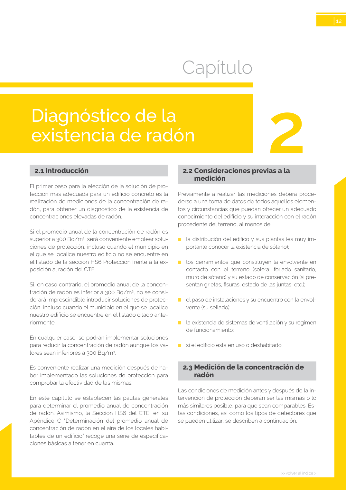

GUIA · 2.1 Introducción · versión sin-fecha · capa guia
Formatos: JSON compacto · Markdown · PDF fuente
Ámbito del documento · texto del ámbito · documento y tablas
Tipo: tablas, figuras · nivel 2 · sección estimada: 8 escalera abierta · padre: a0021
2.1 Introducción El primer paso para la elección de la solución de pro tección más adecuada para un edificio concreto es la realización de mediciones de la concentración de ra dón, para obtener un diagnóstico de la existencia de concentraciones elevadas de radón. Si el promedio anual de la concentración de radón es superior a 300 Bq/m3, será conveniente emplear solu ciones de protección, incluso cuando el municipio en el que se localice nuestro edificio no se encuentre en el listado de la sección HS6 Protección frente a la ex posición al radón del CTE. Si, en caso contrario, el promedio anual de la concen tración de radón es inferior a 300 Bq/m3, no se consi derará imprescindible introducir soluciones de protec ción, incluso cuando el municipio en el que se localice nuestro edificio se encuentre en el listado citado ante riormente. En cualquier caso, se podrán implementar soluciones para reducir la concentración de radón aunque los va lores sean inferiores a 300 Bq/m3. Es conveniente realizar una medición después de ha ber implementado las soluciones de protección para comprobar la efectividad de las mismas. En este capítulo se establecen las pautas generales para determinar el promedio anual de concentración de radón. Asimismo, la Sección HS6 del CTE, en su

PDF fuente redistribuible: copia fiel enlazada en esta página (SHA256 verificado).